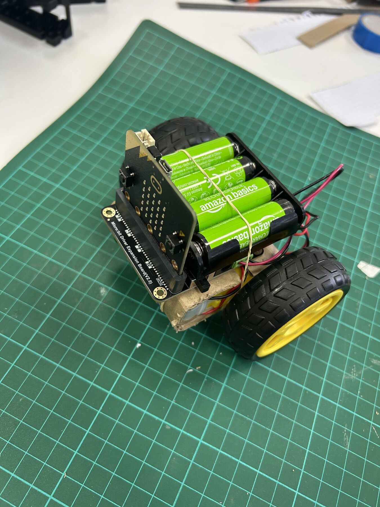
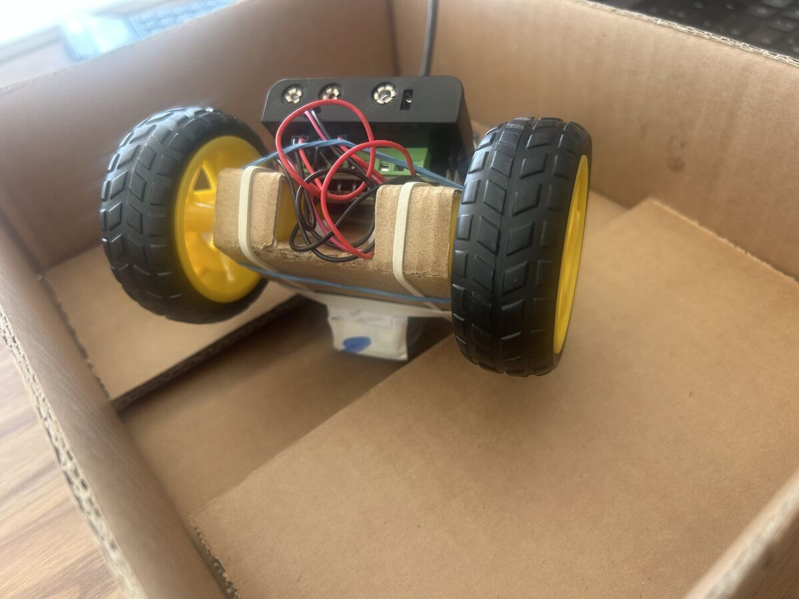
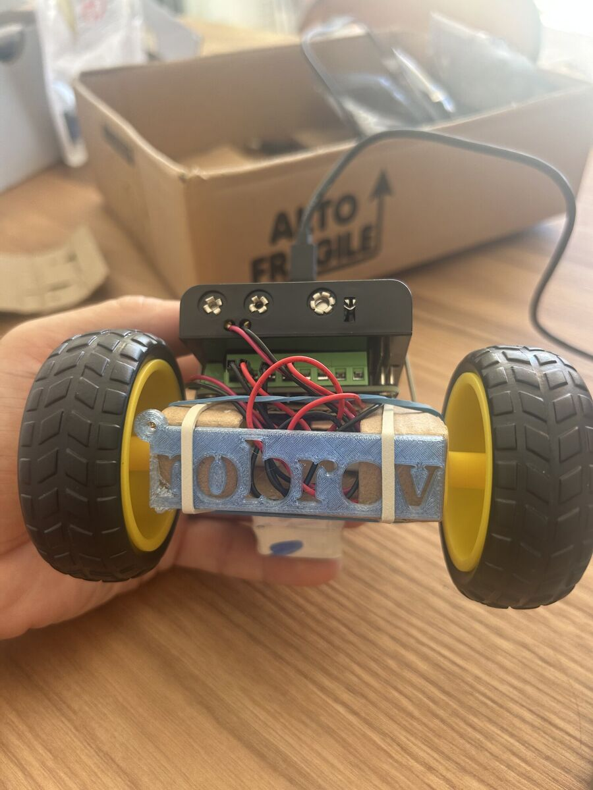
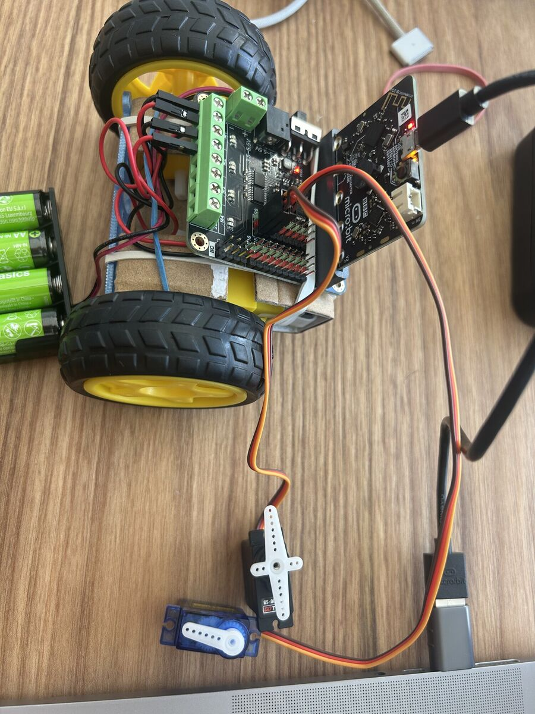

Maker Junior · Projet Rover
Une phrase qui donne envie de le découvrir.
Ce qu'il sait faire
Explique ici comment votre rover monte la pente, et pourquoi vous l'avez construit comme ça.

Notre meilleure idée
Explique ici votre solution pour l'échantillon : la pousser, la saisir ou la soulever.

Comment on le pilote
Explique ici comment on passe d'un mode à l'autre, et comment on sait dans quel mode il est.
